這是一款小巧，方便使用，功率足夠應付多種環境，單電源供電，失真低，噪音小，IC周邊電路精簡的功率放大器。放大電路最優化，電源加上達靈頓濾波電路。
benefit
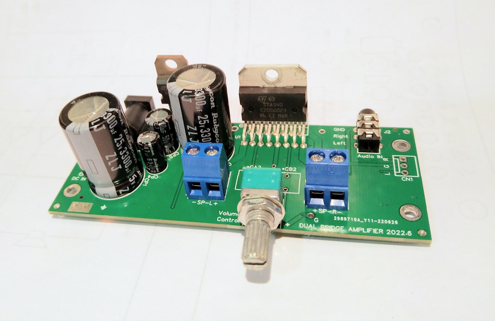
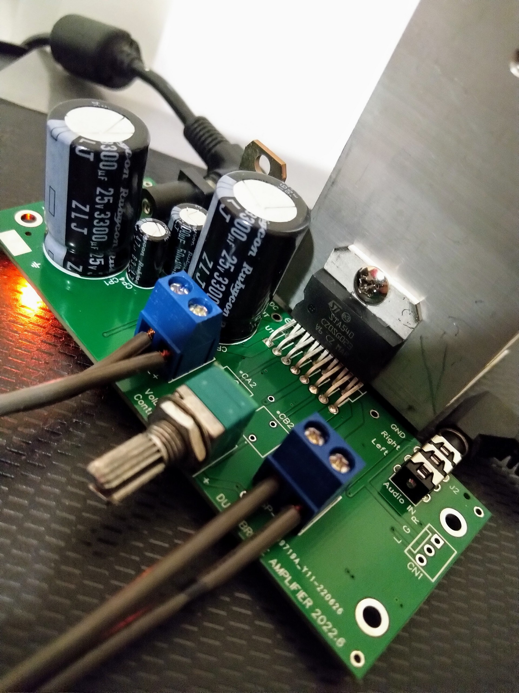
主放大晶片可選擇 ST 的 TDA7266 、 TDA7297、STA540，PCB 都可兼容。這系列為 AB 類的 IC 有著失真低，雜音低，輸出推力好的優點，且輸出為 BTL 橋接模式，輸出電壓振幅大，主要差異如下:
| Header 1 | Header 2 | Header 3 | Header 4 |
|---|---|---|---|
| Row 1 Column 1 | Row 1 Column 2 | Row 1 Column 3 | Row 1 Column 4 |
| Row 2 Column 1 | Row 2 Column 2 | Row 2 Column 3 | Row 2 Column 4 |
| Row 3 Column 1 | Row 3 Column 2 | Row 3 Column 3 | Row 3 Column 4 |
| Row 4 Column 1 | Row 4 Column 2 | Row 4 Column 3 | Row 4 Column 4 |
STA540 則為車用等級，它的輸出級為 Sziklai Pair BJT，值得嘗試看看。 TDA7297 的速度在這之中是最快的，高音表現比其他的好，不過波型有點振鈴現像，相比其它聽起來會比較尖銳。TDA7266 則介於 STA540 與 TDA7297。
這三顆大致上相差不會太遠，主體都一致，只差別在修飾，有地方加分則有其它地方減分。比如我在桌上型全音域喇叭 搭配 STA540 最剛好，有感染力;不過在立式三路分音大劇院喇叭卻是搭配 TDA7297 最動聽。
( RRS 最小工作時輸入輸出壓差只有 1.7 V. 量測筆電變壓器輸出為 19.3V, 經過 RRS 後為17.6V, 符合 IC 的 max Vcc Supply Range: 18V. )
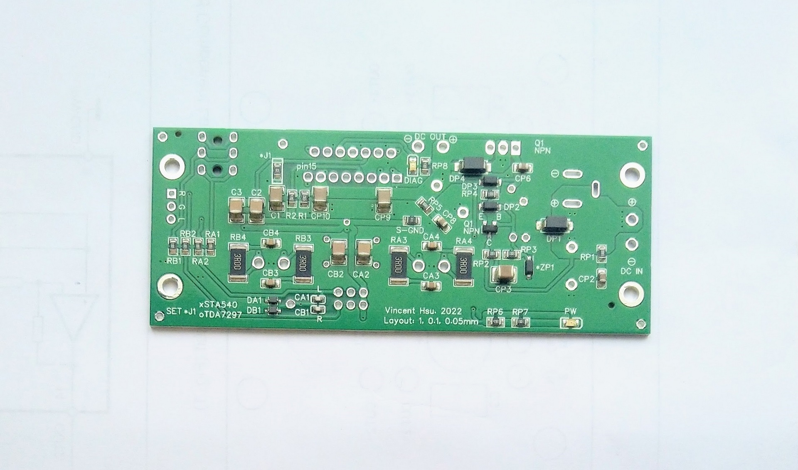
更多測量細節: Dual Bridge Power AMP - STA540 TDA7266 TDA7297 - Measurement Detail
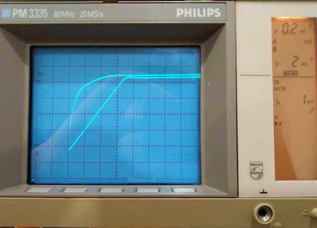
電路板可以使用不同的 IC，當使用 TDA7266 or TDA7297時: J1 要連起來; 使用 STA540時: J1 不接
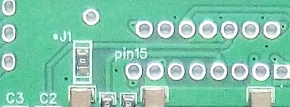
Standby Mode: 啟動的方法為 C1 將電容兩側短路，Standby Mode 時，靜態電流只有 3.2 mA
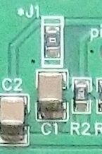
ST STA540 TDA7266 TDA7297 IC 的背面散熱面為接地，而 ST TIP122 背面散熱面為電源正電，裝散熱片或裝機殼時要小心分開，不然電源會短路。至少一個要分開或加隔離片
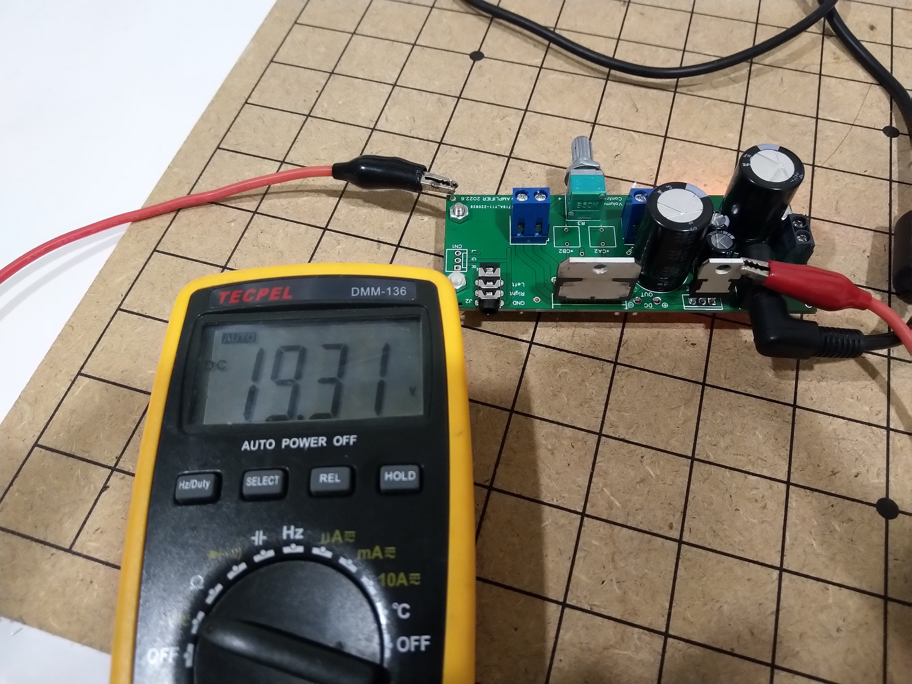
RRP:
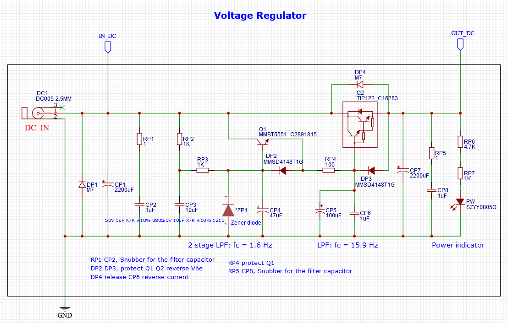
input:
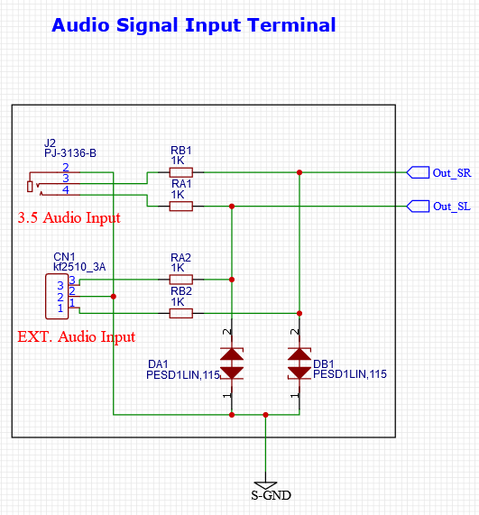
volume:
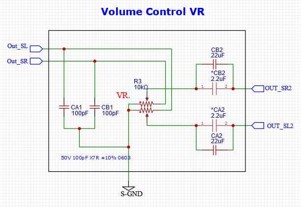
main-ic:
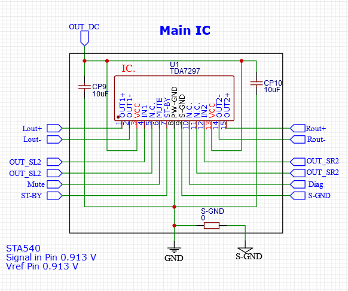
mian-ic-components:
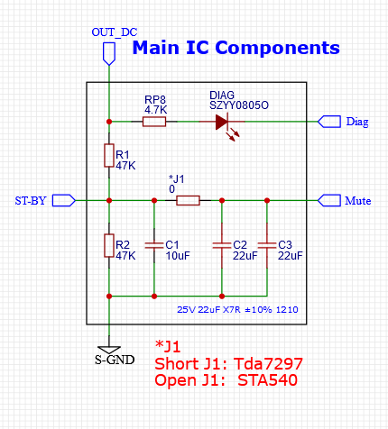
mian-ic-components:
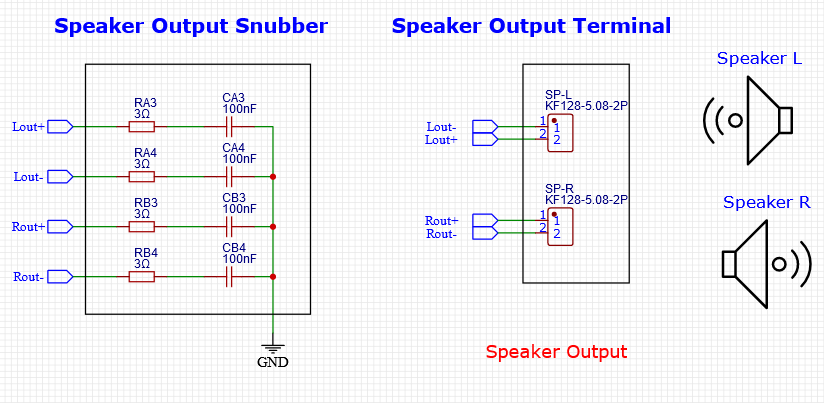
pcb-front 2d:
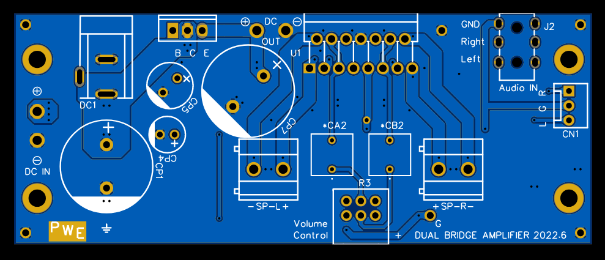
pcb-back 2d:
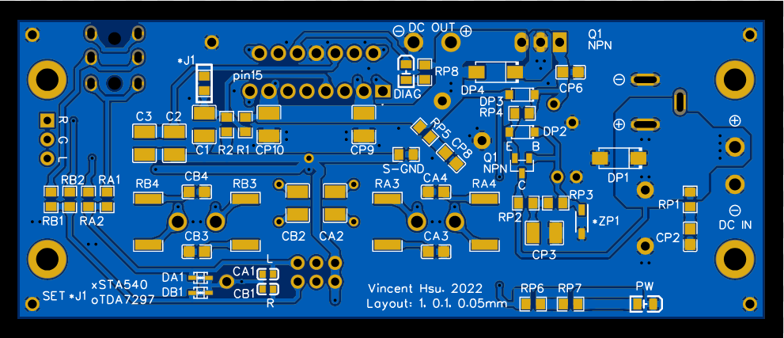
pcb-back 3d:
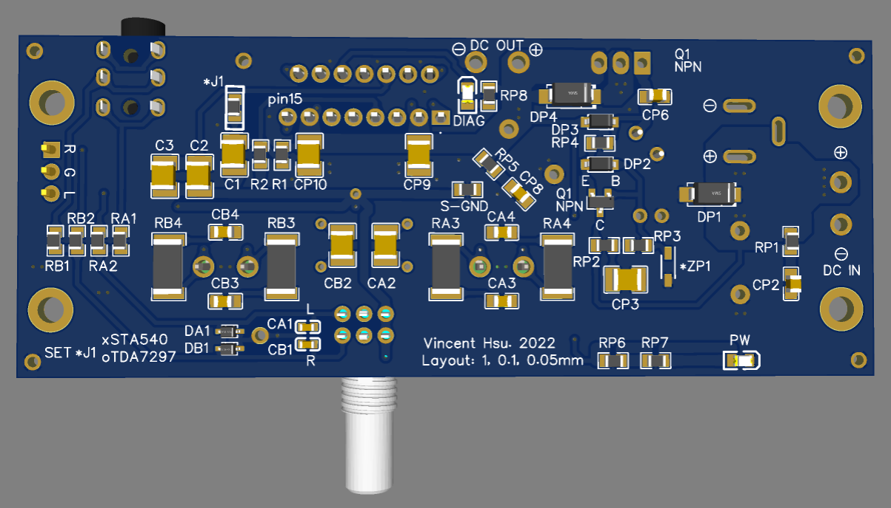
Inline Code : alert('Hello World'); just it
Code 0101010101010101
p Code 0101010101010101
pre Code 0101010101010101pre Code 0101010101010101
pre Code 0101010101010101pre Code 0101010101010101pre Code 0101010101010101
pre Code 0101010101010101pre Code 0101010101010101pre Code 0101010101010101
p 0101010101010101
pre 0101010101010101
"Good design is as little design as possible."
~ Dieter Rams